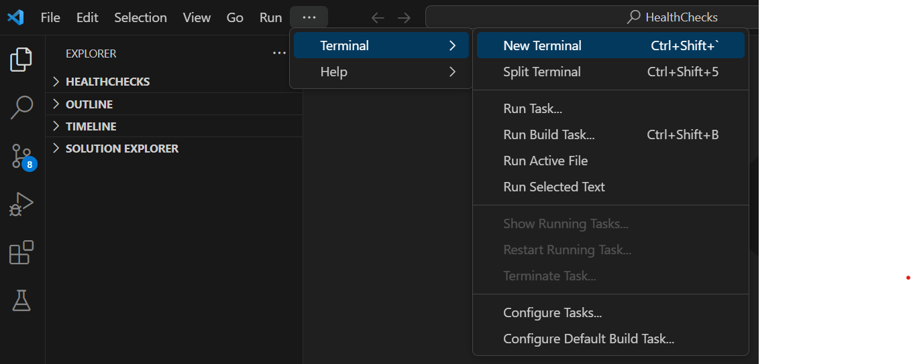
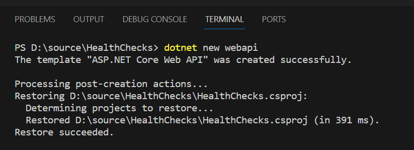
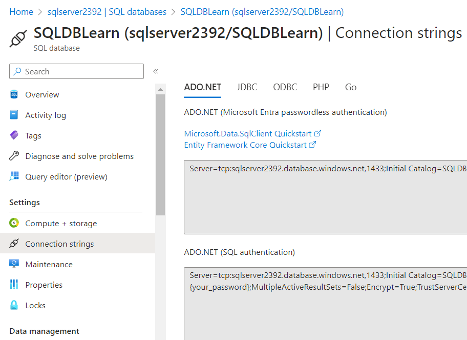
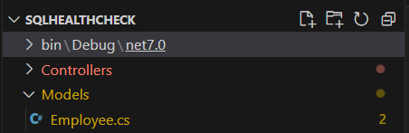

SQL Database Health check in ASP.NET core
In this article we will understand how to add a health check for SQL server database.
In this article we will create a .NET core web api. We will add a new api endpoint to add employee details to SQL server database.
Then we will add a health check to check the connectivity of the SQL server database from the application.
-
Create an asp.net core web api application.
- Open a new terminal in visual studio code

- Navigate to the desired directory.
- Run the command "dotnet new webapi" to create the web api application

-
Create an Employee table in SQL database
- Create a new table "Employee" in azure SQL database using the query Create TABLE Employee (Id int PRIMARY KEY IDENTITY(1,1), FirstName nvarchar(50), LastName nvarchar(50))

- Copy the connection string of the database from the azure portal

-
Create an Employee model class
- Add a new folder named "Model" under the parent directory and add a new file named Employee.cs within the Model folder as shown below

- Create an Employee class with first name and last name properties as shown below
-
Create a new controller.
- Create a new file within the Controller folder and name it as "DataController.cs" as shown below.
- Add a new class named DataController within the DataController.cs file within the namespace. Add the using statement as shown below
- Add a new api named "AddEmployee" which accepts an input parameter of type Employee class. Add "HttpPost", Route attribute as shown below
- Add code implementation to add new employee to sql employee database table. Install required nuget packages
-
Build and run the application. Invoke the api and add an employee.
- Launch the swagger URL
- Give first name and last name and click on submit. New Employee will be added to employee table

- Employee details in the employee table
Now we have an application which depends on SQL DB. This application is said to be helathy if the application can connect to SQL DB.
Let's add a health check to verify the connectivity of the SQL DB
- We have a package "AspNetCore.HealthChecks.SqlServer" available to check the health of SQL server DB. Install the package

- Fetch the SQL DB connection string in the Program.cs file as shown below
- Add SQL server health check using the "AddSqlServer" extension method as shown below

- Add a health check endpoint in the Program.cs file

- Run the application and navigate to "Healthz" endpoint